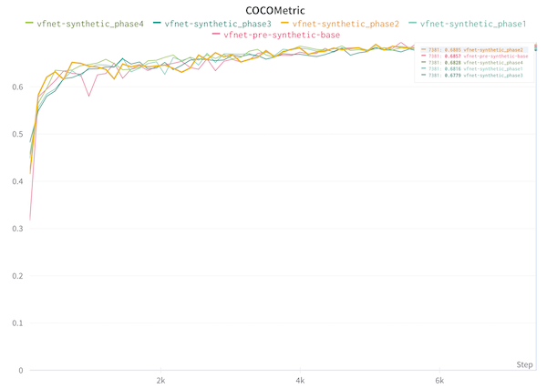
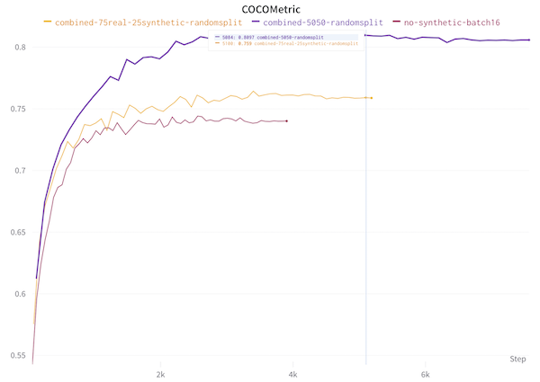
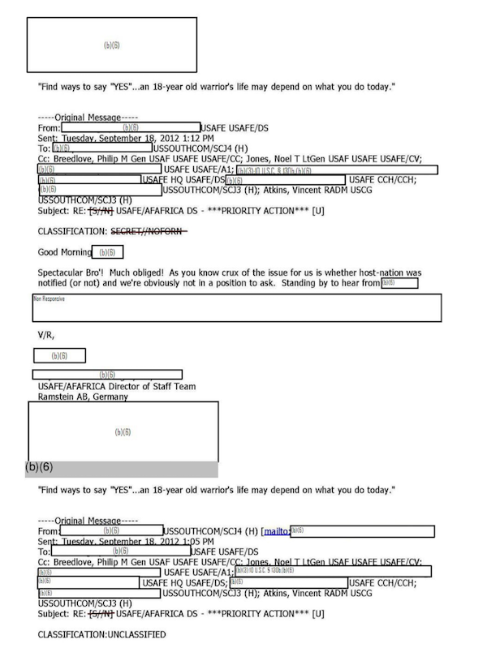

(This is part of a series of blog posts documenting my work to train a model that detects redactions in documents. To read other posts, check out the redactionmodel taglist.)
A clean and focused dataset is probably at the top of the list of things that would be nice to have when starting to tackle a machine learning problem. For object detection, there are some useful starting points, but for many use cases you’re probably going to have to start from scratch. This is what I’ve been doing for the past few months: working to bootstrap my way into a dataset that allows me to get decent performance training a model that can recognise redactions made on documents.
As part of that journey so far, some of the big things that I’ve taken time to do include:
- manually annotating 1000+ images
- using a model-in-the-loop to help bootstrap that annotation process by pre-filling annotation suggestions on an image that I could then correct
- creating synthetic images to increase the size of my dataset used in training
- spending time looking at what the model found difficult, or what it got wrong
At the end of my synthetic data creation blogpost, I mentioned that the next step would be to test the effect of adding in the new synthetic examples. Well… the results are in!
A failed attempt to train with synthetic data
I wasn’t sure exactly how much synthetic data would be appropriate or performant to use, so created a loose experiment where I started with 20% of the total images and increasing up until I reached 50%. (I figured that more than 50% synthetic data probably wasn’t a great idea and would probably not help my model perform out in the real world.)

As you can see above: my initial experiment did not show great results. In fact, in several places, if I added synthetic data my model actually performed worse. This was a strong repudiation of my intuition of what would happen. After all, the whole point of adding the synthetic data was to get the model more of a chance to learn / train and thus improve its ability to recognise redaction object in documents.
I dug into the data that I’d generated and the data I’d been using to train, and discovered a nasty bug which was tanking the performance. A week of debugging mislabelled bounding boxes in evenings after work and I was back with results that finally made sense.
Performance boosts after adding synthetic data

In this chart, at the bottom you can see how training the model without the synthetic data (no-synthetic-batch16) performed. Ok, not great. Then the next best performing (combined-75real-25synthetic-randomsplit)was when 25% of the total number of images was synthetic, and the rest were real manually annotated images. At the top, with around an 81% COCO score, was the model where I used 50% synthetic and 50% real images. This seemed to fit what my intuition said would happen.
More synthetic data helped. I guessed that if I had millions of labelled images then the synthetic data would perhaps have been less useful, but starting from scratch it was really supporting the process.
I was curious what would happen when I returned to FiftyOne to carry out some error analysis on the new model’s performance. Even before I had reached those results, I had a hunch that the synthetic images I’d created were perhaps too generic. I think they probably were helping boost some baseline performance of my model, but I knew they weren’t helping with the hard parts of detecting redactions.
‘Hard examples’: creating targeted synthetic data
As a reminder, this is the kind of image that is ‘hard’ for my model (or even a human) to be able to identify all the redactions:

The FiftyOne visualisations of what was and wasn’t working validated my hunch: yes, synthetic data helped somewhat, but the model’s low performance seemed much more vulnerable to misrecognition of the hard examples. Even with a 50/50 split between synthetic data and real manually annotated data, the hard examples were still hard! (And the converse was also true: the model was already pretty good at identifying ‘easy’ redactions (e.g. of the black box type).
If we look back at the example of a ‘hard’ redaction above, two things stood out:
- They’re hard, even for a human! This was borne out in the way I needed to take special care not to forget or mislabel when I was adding manual annotations.
- There are lots of redactions on a single page/image.
The second point was probably important, not only in the sense that there were more chances of getting something wrong on a single page, but also in the sense that the redactions were (relatively) small. The detection of small objects is almost its own field in the world of computer vision and I don’t know too much about it, but I do know it’s somewhat an unsolved problem. That said, finding a way to boost the performance of the models on these ‘hard’ examples (there were a few other types of hard image) seemed like it might tackle a significant shortcoming of my model.
I decided to try creating a separate batch of synthetic image data, this time fully tailored to tackling some of the hardness mentioned above: it would have many small redactions on a single page, they would all be white boxes and there might also be things like tables with white box-like shapes coexisting next to redactions.
Luckily, the work I’d done previously on creating synthetic data helped me get started quickly. I returned to borb, an open-source tool for quickly creating PDF documents that allows for a pretty flexible prototyping of layouts with all sorts of bells and whistles added. These were some of the documents I generated:

The hard images were hard, and I had created some synthetic chimeras that (I believed) approximated some of the features of the original hard images. I did not want to overbalance my training data, however, and took care not to create too many of this type of image.
My script — as with the previous synthetic data — also required me to create the annotation files at the same time as creating the document. With borb it was relatively trivial to get the bounding box data for objects created, and there was even in-built functionality to create and apply redactions onto a document. (I’m moving fairly quickly over the mechanics of how this all worked, but it’s not too far distant from how I described it in my previous post so I’d refer you there for more details).
Once the images were created and added to my datasets, it was time to retrain the model and see what benefit it brought.

As you can see, the model jumped up from around 80.5 to 84% when I aded the hard synthetic examples in. That’s a pretty nice jump as far as I’m concerned, especially given that I only added in 300 images to the training data. I still had a little over a thousand of the original basic synthetic images that I was using, but this result showed me that tackling the badly performing parts of the model head-on seemed to have a positive outcome.
At this point, I did some more experiments around the edges, applying other things I knew would probably boost the performance even more, notably first checking what would happen if I increased the image size from 512 to 640. I got up to an 86% COCO score with that improvement alone.
In a final twist, I second-guessed myself and wondered whether the original synthetic data was even helping at all… I removed the thousand or so ‘basic’ synthetic images from the data and retrained the model. To my surprise, I achieved more or less the same COCO score as I had with the basic synthetic images. I’m taking this as a strong suggestion that my basic synthetic images aren’t actually helping as much as I’d thought, and that probably a smaller number of them as a % of the total would be beneficial.
Reflections on experimenting with synthetic data
So, what can I conclude from this whole excursion into the world of synthetic image creation as a way of boosting model performance?
- adding synthetic data really can help!
- the world of synthetic data creation is a huge rabbit hole and potentially you can get lost trying to create the perfect synthetic versions of your original data. (I mean this both in the sense of ‘there’s lots to learn’ as well as ‘you can spend or lose a ton of time here’.)
- Targeted synthetic data designed to clear up issues where the model has been identified as underperforming is probably best. (Conversely, and I’ll be careful how much I generalise here, middle-of-the-road synthetic data that doesn’t resemble the original dataset may not be worth your time.)
- Knowing your original data and domain really well helps. A lot. My intuition about what things the model would stumble on was fuelled by this knowledge of the documents and the domain, as well as by the experience of having done manual annotations for many hours.
There are probably many (many) more things I can do to continually tinker away at this model to improve it:
- continue down the path of more error analysis, which would fuel more targeted addition of annotations, and so on.
- create better versions of synthetic data with more variation to encompass the various kinds of documents out in the real world.
- more self-training with the model in the loop to fuel my manual annotation process.
- further increases to the image size (perhaps in conjunction with progressive resizing).
- increasing the backbone from
resnet50toresnet101.
In general, improving the quality of the data used to train my model seems to have been (by far) the best way to improve my model performance. Hyper-parameter tuning of the sort that is often referenced in courses or in blog posts does not seem to have had much of a benefit.
It is probably (mostly) good enough for my use case and for where I want to be heading with this project. There are other things that need addressing around the edges, notably parts of the project that could be made more robust and ‘production-ready’. More about that in due course, but for now please do comment below if you have suggestions for things that I haven’t thought of that might improve my model performance!